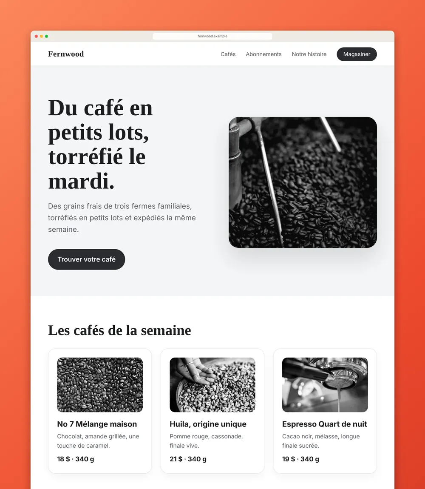

Côte à côte
Placez 2 à 4 captures sur une seule image : pages de prix, avant et après, tests A/B.
Une extension Chrome · Gratuite pour commencer
Toute page Web, de haut en bas et d’une netteté parfaite. Bandeaux de témoins, fenêtres surgissantes et publicités restent hors de l’image, et le résultat est prêt pour votre présentation, votre publication ou votre client.
Un seul paiement pour Pro. Aucun compte. Aucun abonnement.

Bandeaux de témoins, bulles de clavardage, fenêtres surgissantes et publicités sont masqués avant la capture, puis remis en place.
Les en-têtes fixes n’apparaissent qu’une fois. Les images différées se chargent d’abord. Les très longues pages restent nettes.
Aucun compte. Aucun pistage. Vos captures ne quittent jamais votre ordinateur.
En action
Du vrai Vitrine, sur une boutique inventée. La fenêtre surgissante, la publicité vidéo et le bandeau de témoins restent hors de l’image.
Page en vidéo
Vitrine fait défiler votre capture de haut en bas dans une vidéo MP4, en 16:9, 1:1, 4:5 ou 9:16. Faite à partir de votre capture, dans votre cadre, sur votre ordinateur.
Masquer les publicités
Activez Masquer les publicités : les publicités, leurs cases vides et les fenêtres par-dessus restent hors de l’image. Rien n’est bloqué sur la page elle-même.
Couleurs de marque · Pro
Les couleurs de marque reprennent les couleurs du site pour créer un arrière-plan assorti. Vous préférez un seul style partout? Choisissez un arrière-plan comme Vermillon ou Encre et enregistrez-le.

Le Studio
Flèches, cadres, surlignage, étiquettes, étapes numérotées et flou. Rognez, puis exportez en PNG, JPG ou PDF, ou copiez directement dans le presse-papiers.

Carrousels
Des diapositives 4:5 numérotées, chacune coupée entre deux blocs de texte. Exportez un PDF pour LinkedIn ou des diapositives PNG pour Instagram.


Placez 2 à 4 captures sur une seule image : pages de prix, avant et après, tests A/B.

Chaque capture devient une étape numérotée. Ajoutez une note à chacune, puis exportez un PDF soigné ou du Markdown.
Privé par conception
Prix
0 $ pour de bon
19 $ US une fois
Prix de lancement jusqu’au 30 novembre 2026, puis 24 $ US.
Vous recevez une clé de licence à coller dans Vitrine. Aucun compte. Les nouveaux utilisateurs ont aussi un essai Pro de 7 jours, sans carte.
Satisfait ou remboursé pendant 14 jours. Et ailleurs? Voir la comparaison des prix.
Non. Ni pour la version gratuite, ni pour Pro. Pro, c’est une clé de licence que vous collez une fois, et elle fonctionne hors ligne.
Dans une bibliothèque privée, dans votre navigateur, sur votre ordinateur. Sauvegardez le tout dans un seul fichier .zip quand vous voulez.
Rien, sauf une vérification unique de la licence quand vous activez Pro.
Google Chrome sur votre ordinateur.
Oui. Vitrine parle français et anglais, et suit la langue de votre Chrome.
Écrivez-nous dans les 14 jours suivant votre achat et nous vous rembourserons en entier.
Écrivez à support@metadatamarketer.com. Une vraie personne vous répond en 3 jours ouvrables.
Un seul paiement pour Pro. Aucun compte. Aucun abonnement.